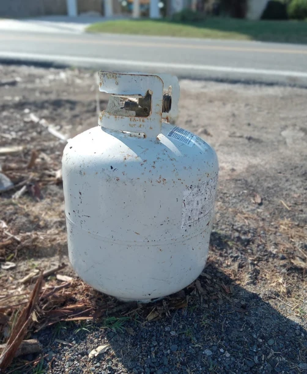

Conference poster
Unusual Coastal Trash: The Danger and Solution
While helping with cleanup in Cedar Key after Hurricane Idalia, I encountered gas tanks, furniture, and other large items. I wanted to know what volunteers had found at other cleanups across Florida.
From a field observation to a poster
I examined ten years of Ocean Conservancy cleanup records, grouped unusual debris into six categories, and considered the environmental risks associated with large and non-plastic items. This work became a poster for the 2024 Natural Hazards Workshop and prompted my later research on how volunteers record debris.
